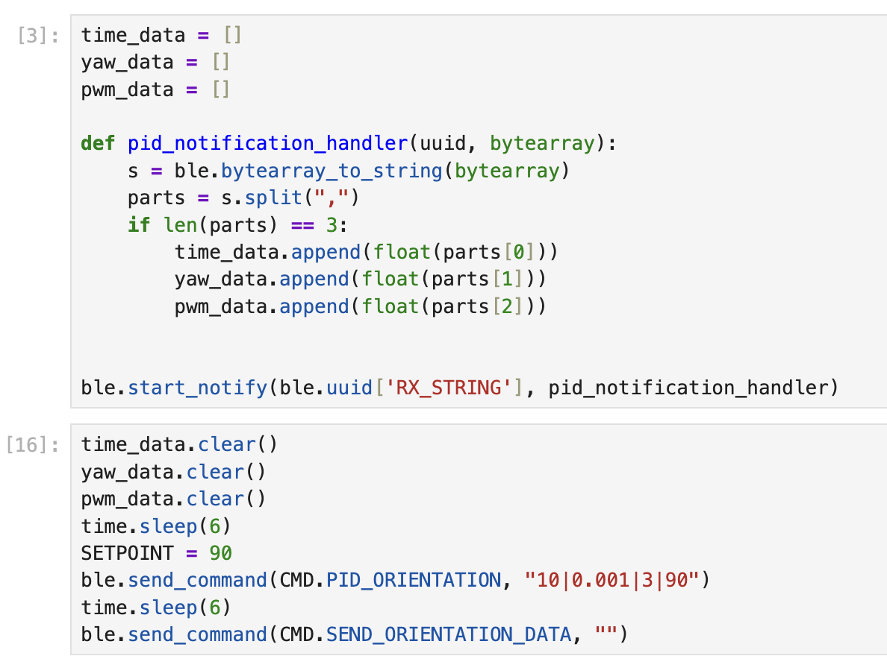
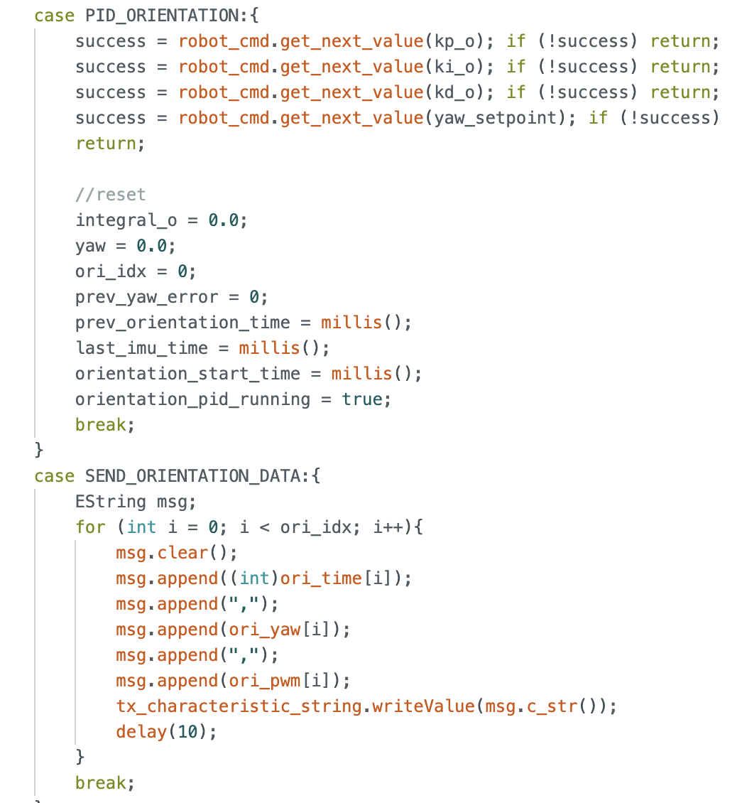
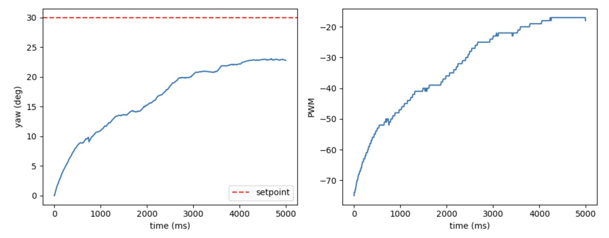
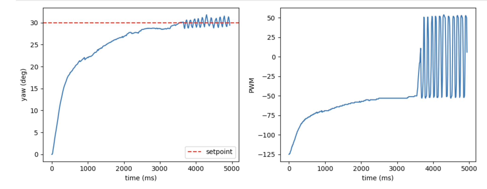
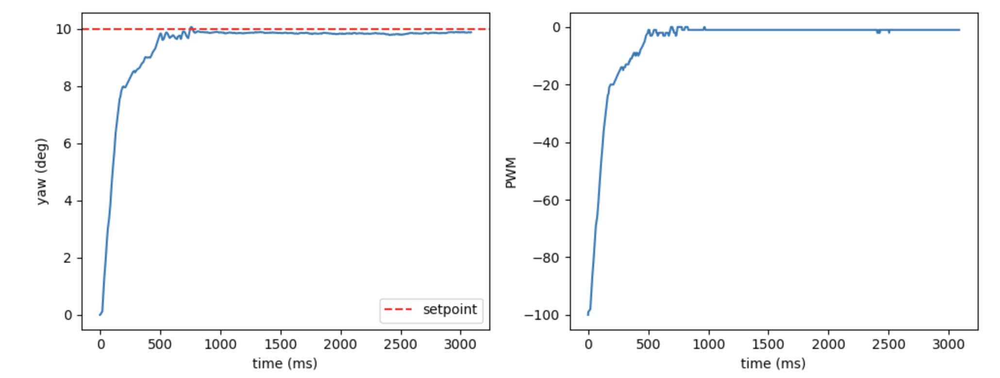
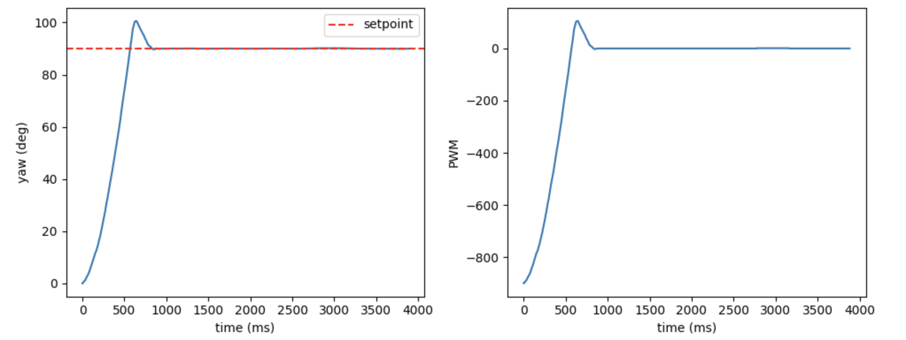
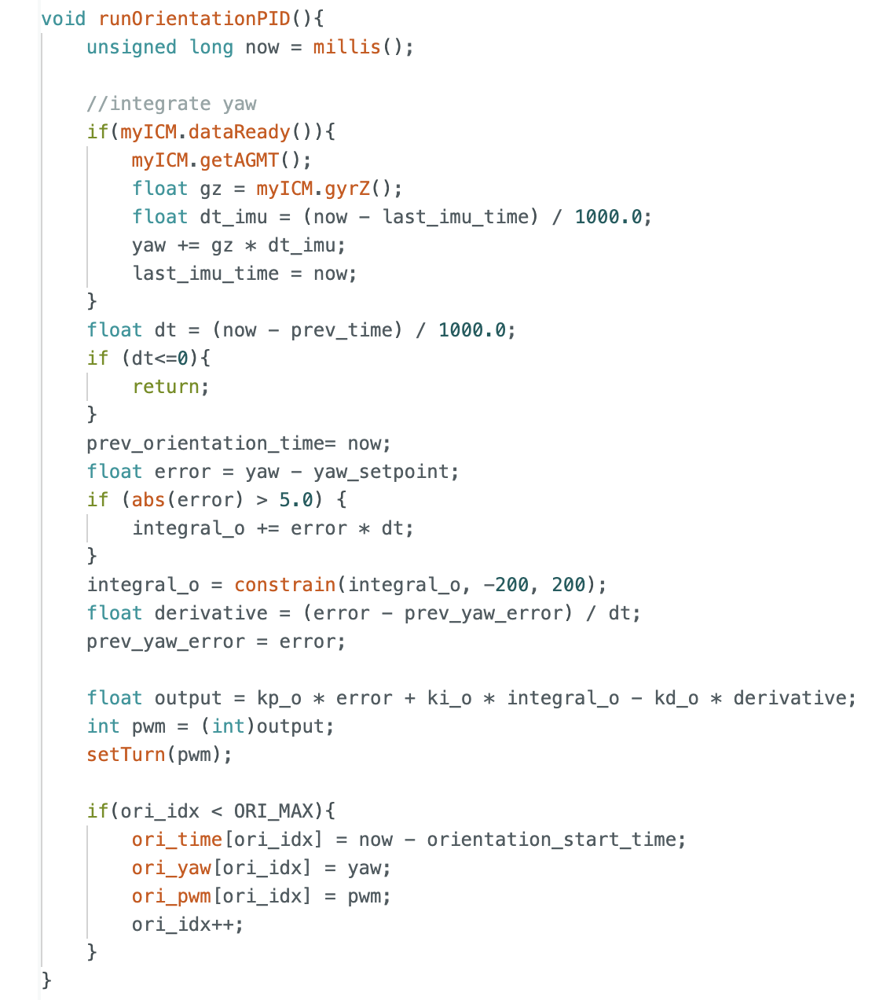

Lab 6: Rotation PID Control
Prelab
As in Lab 5, I transmitted data to the robot car from my computer via Bluetooth. Since I needed to frequently adjust the robot's rotation angle this time, I also passed the setpoint as a parameter to the robot.

On the Arduino side, I used two commands: one to receive the corresponding parameters, and the other to send the data generated during the car's operation back to the computer.

PID Tuning
In Lab 4, I determined that the minimum PWM value required for my robot's axial rotation is 120. Furthermore, at the same PWM setting, the left motor rotates more slowly than the right; therefore, it is necessary to apply a calibration factor of 1.4. Consequently, my maximum PWM value is 255 / 1.4 = 180.
First, I tested the P-model. I set Kp to 2.5 and the rotation angle to 30 degrees; the results are as follows.

I observed that the robot car was able to rotate slowly, but it failed to reach the specified angle. Consequently, I increased the Ki value, setting it to 0.1; this allowed the robot to be driven to the intended target point, but it resulted in oscillation.

My solution here was to implement "wind-up protection" (which will be explained in a later section). I first reduced the value of Ki to 0.0001. I then observed that the current Kp value did not allow the cart to rotate through very small angles (e.g., 5 degrees). After consulting with the TA, we determined that the minimum angle the cart should be capable of rotating through is 10 degrees; consequently, I adjusted the Kp value, ultimately settling on a value of 10. With this setting, when the target angle was set to 10 degrees, the cart successfully reached the desired position.

Next, I began configuring the Kd value. Since I had set Kp relatively high, the overshoot phenomenon was quite pronounced. I attempted to increase Kd significantly; however, I discovered that oscillations occurred once Kd exceeded 4. Consequently, I ultimately set Kd to 3; although a slight overshoot still persists, the system is able to quickly settle back to the target angle.

Result
Below is my corresponding control code. Like lab5, I selected 5 seconds as the sampling time.

This is the final result I achieved after debugging: I set the angle to 90 degrees, and after the robot turned, I kicked it; the robot was still able to quickly recover its position, indicating that the model is performing well.
Windup Discussion
As discussed previously regarding the wind-up issue, I have designed a wind-up protection mechanism to eliminate the oscillations caused by integral action. I achieved this by limiting the integral value to a range between -200 and +200, and by halting the integration process whenever the system is within 5 degrees of the target setpoint. The corresponding code and result plots are shown below, clearly demonstrating that the robot no longer exhibits oscillations.


Statement
I got much help from Yueming Liu's page.